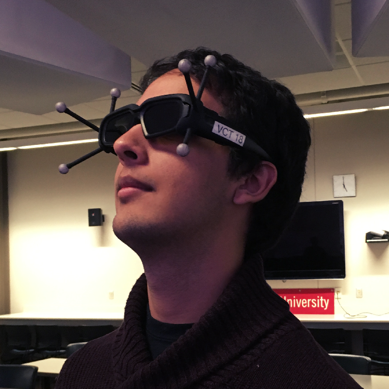

Slug Slasher is a 2D action platformer where the player takes on the role of a chef who must defend the world from an onslaught of giant slugs with only his trusty bucket of salt.
The game is being developed in Unity, with Tiled Map Editor being used to create maps.
Development started in late January of 2017 and is expected to finish during December.
Slug Slasher is being developed by Slapped Silly Studios, a small team of students from the Indiana University Bloomington campus and a subunit of the organization Hoosier Games.
Ryan Reske
Having pitched the original idea for the game, Ryan Reske is currently a senior in the IU Media School's Game Design program. Additionally, he serves as the team's lead designer and social media manager and is the Vice President of Hoosier Games.
Having pitched the original idea for the game, Ryan Reske is currently a senior in the IU Media School's Game Design program. Additionally, he serves as the team's lead designer and social media manager and is the Vice President of Hoosier Games.

Rajin Shankar
Rajin Shankar is a sophomore Computer Science student in IU's School of Informatics, Computing, and Engineering. In addition to being the team's lead programmer and artist, he manages web/graphic design and project organization. Within Hoosier Games he acts as Workshop/Presentation Coordinator.
Rajin Shankar is a sophomore Computer Science student in IU's School of Informatics, Computing, and Engineering. In addition to being the team's lead programmer and artist, he manages web/graphic design and project organization. Within Hoosier Games he acts as Workshop/Presentation Coordinator.
Dakota Erickson
A sophomore Game Design student, Dakota Erickson serves as the team's lead systems designer and playtesting/QA coordinator. He is also the Treasurer of Hoosier Games.
A sophomore Game Design student, Dakota Erickson serves as the team's lead systems designer and playtesting/QA coordinator. He is also the Treasurer of Hoosier Games.
Gabby Benninghoff : assistant background and promotional artist
Nathaniel Ferguson : sound effects
Brandon Mitchell and Nathan Howe : music
Brian Lee : assistant designer and resident slug researcher
Special Thanks
We would like to give special mention to the following faculty and students at Indiana University for their contributions, guidance, and support
Ian Sundstrom
Will Emigh
Chabane Maidi
Rush Swope
Zachary Nicholas
Jonathon Brown
Sebastian Cooney
Kenton Ellson
Emilie Holtz